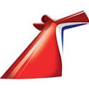
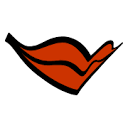
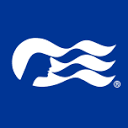
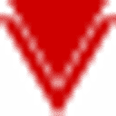

Companhias de Cruzeiros
Explore as principais companhias de cruzeiros do mundo por perfil de viagem, com uma organização pensada para separar marcas de massa, companhias premium e linhas focadas em luxo.
Categorias
Massa / Contemporâneo 10 marcas
Premium 12 marcas
Luxo 7 marcas
Ultra-luxo 6 marcas
Expedição 13 marcas
Yacht / Boutique 5 marcas
Costeiro / Regional 3 marcas
Companhias por perfil
Massa / Contemporâneo
10 companhias
Costa Cruzeiros12 navios · Mediterrâneo, Caribe e mais
CZCorazul Cruceros1 navio confirmado · Buenavista com estreia em julho de 2026
MSC Cruzeiros23 navios · World America, Euribia e mais
Royal Caribbean29 navios · Star, Icon, Utopia e mais
Norwegian Cruise Line21 navios · Luna, Aqua, Viva e mais

Carnival Cruise Line29 navios · Mardi Gras, Jubilee e mais
AIDA Cruises11 navios · Cosma, Nova e mais ACAmbassador Cruise Line3 navios · Ambience, Ambition e Renaissance MCMarella Cruises5 navios · Voyager, Explorer 2, Discovery e mais MASMargaritaville at Sea2 navios ativos · Islander e ParadisePremium
12 companhias
Celebrity Cruises15 navios · Xcel, Ascent e mais

Princess Cruises17 navios · Sun Princess, Royal Princess e mais Holland America Line11 navios · Rotterdam, Koningsdam e mais Disney Cruise Line8 navios · Wish, Treasure, Dream e mais
Virgin Voyages4 navios · Brilliant, Resilient e mais P&O Cruises7 navios · Arvia, Iona e mais TUI Cruises9 navios · Relax, Mein Schiff 7 e mais AZAzamara4 navios · Journey, Quest, Pursuit e Onward CLCelestyal Cruises2 navios · Journey e Discovery no Mediterraneo, Adriatico e Golfo Arabico FOFred. Olsen Cruise Lines3 navios · Bolette, Borealis e Balmoral SGSaga Cruises2 navios · Spirit of Adventure e Spirit of Discovery VOViking Ocean Cruises12 navios · Vesta, Vela, Saturn, Yi Dun e maisLuxo
7 companhias
Oceania Cruises8 navios · Allura, Vista e mais
Cunard4 navios · Queen Mary 2, Queen Anne e mais
APTAPT Luxury Travel7 navios em destaque · Lady Eleganza, Seabourn Venture, Coral Adventurer e mais
CRCrystal Cruises2 navios ativos · Crystal Serenity e Crystal Symphony
EJExplora Journeys2 navios ativos · EXPLORA I e EXPLORA II
PGPaul Gauguin Cruises1 navio ativo · m/s Paul Gauguin na Polinésia Francesa
SDSeaDream Yacht Club2 iates ativos · SeaDream I e SeaDream II
Ultra-luxo
6 companhias
Regent Seven Seas Cruises7 navios · Grandeur, Splendor e mais
Seabourn6 navios · Pursuit, Venture e mais
OEOrient Express Sailing Yachts2 yachts · Corinthian e Olympian
RCRitz-Carlton Yacht Collection3 yachts · Evrima, Ilma e Luminara
SSSilversea Cruises12 navios · Silver Ray, Nova, Endeavour, Origin e mais
FSFour Seasons Yachts1 yacht confirmado · Four Seasons I
Expedição
13 companhias
66X66 Degrees Expeditions1 navio · Seaventure e expansão polar planejada
AEAurora Expeditions3 navios ativos · Douglas Mawson, Sylvia Earle e Greg Mortimer
CECoral Expeditions3 navios ativos · Coral Adventurer, Coral Geographer e Coral Discoverer
HLHapag-Lloyd Cruises5 navios · EUROPA, EUROPA 2 e trio HANSEATIC
HEHeritage Expeditions2 navios ativos · Heritage Adventurer e Heritage Explorer
HXHX Expeditions5 navios ativos · Fridtjof Nansen, Roald Amundsen e mais
LELindblad Expeditions24 embarcações · Endurance, Resolution, Explorer e mais
AOVAtlas Ocean Voyages3 navios ativos · World Navigator, World Traveller e World Voyager
PLXPolar Latitudes Expeditions4 navios ativos · Discoverer, Ocean Albatros e mais
PXPonant Explorations13 navios ativos · Le Commandant Charcot, Le Ponant, Le Boréal e mais
QEQuark Expeditions4 navios ativos · Ultramarine, Ocean Explorer, World Explorer e World Voyager
SCScenic Luxury Cruises & Tours2 Discovery Yachts ativos · Scenic Eclipse e Scenic Eclipse II
SHSwan Hellenic3 navios ativos · SH Diana, SH Vega e SH Minerva
Yacht / Boutique
5 companhias🚧Emerald CruisesYachts e small ships com foco premium · página da companhia em construção
🚧Sea Cloud CruisesVeleiros clássicos e experiência boutique · página da companhia em construção
🚧Star ClippersVela clássica e roteiros intimistas · página da companhia em construção
🚧Variety CruisesCruzeiros boutique em pequenos iates · página da companhia em construção
🚧Windstar CruisesSmall ships e yachts com perfil intimista · página da companhia em construção
Costeiro / Regional
3 companhias🚧American Cruise LinesOperação costeira e regional nos Estados Unidos · página da companhia em construção
🚧Pearl Seas CruisesCruzeiros regionais em pequenos navios · página da companhia em construção
🚧HurtigrutenCosta norueguesa e itinerários regionais icônicos · página da companhia em construção